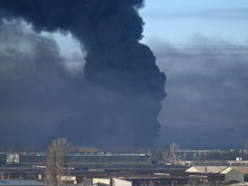

지난달 24일 러시아의 침공으로 시작된 전쟁은 한 달에 가까운 시간 동안 지속 되고 있다. 러시아군이 우크라이나의 수도 키이우를 침공하며 벌어진 교전은 우크라이나군의 강한 저항을 만나 러시아의 예상과는 다른 전개 양상을 띠고 있다. 특히 지난 16일 우크라이나군이 수도 키이우와 남부 항구도시 헤르손 등에서 러시아군 진지에 반격을 시작해 막대한 손실을 입히며 전세가 바뀌고 있다는 분석이 나오고 있는 상황이다. 그러나 이러한 전쟁의 전개 양상과는 무관하게 민간인이 입는 피해는 여전히 극심하다.
민간인 피해에 대한 우려는 전쟁 전부터 제기되어 왔다. 러시아 측은 우크라이나에서 민간인 피해는 없을 것이라고 강조하며 세르게이 라브로프 러시아 외무장관의 기자회견을 통해 “아무도 우크라이나 국민을 공격하지 않을 것”이라 밝히고 “민간 시설에 대한 공습은 없었다”고 주장하였으나 민간인 피해 관련 보도가 끊이지 않는 실정이다.
실제 러시아가 우크라이나를 침공한 지 4일만에 최소 200명이 숨지고, 1000명 넘는 사람이 다쳤다. 침공 첫날부터 민간인이 거주하는 아파트나 유치원 등 민간 시설에 포탄이 떨어지고, 주거지에서 로켓이 발견됐다는 제보가 CNN에 빗발쳤다. 이와 더불어 유엔인권고등판무관실(UNOHCHR)은 우크라이나 침공이 18일 째에 접어든 지난 14일을 기준으로 우크라이나 민간인 1663명이 사망하고 1067명이 부상을 당했다는 조사를 내놓았다. 이는 우크라이나의 일부 지역에서의 정보 전달 지연을 반영하지 않은 수치로 이러한 사항들까지 고려한다면 더 많은 사상자나 부상자가 있을 것으로 추정된다.
민간인의 인권 침해는 사상자나 부상자의 발생 측면에서만 존재하는 것이 아니다. 국제간호협의회(ICN)은 러시아가 우크라이나 마리우폴에 있는 소아산부인과 병원을 공격한 사실을 보도했다. 또한 세계보건기구(WHO)는 우크라이나 내의 의료시설과 의료종사자, 구급차 등 총 18건의 의료 관련 공격이 발생했다는 소식을 전했다. 우크라이나 민간인들은 생존권을 침해 받는 것은 물론 정당히 치료 받거나 보호받을 권리마저 빼앗기고 있는 것이다. 분쟁지역의 의료인을 지키지 못하는 것은 더 많은 민간인들이 위험 상황에 놓이게 된다는 뜻이다. 이에 대해 파멜라 치프리아노 ICN 회장은 “의료시설과 환자 이송 및 의료종사자에 대한 공격이 충격적”이며 “어린이와 산모를 포함한 무고한 사람들이 전쟁의 표적이 된 것은 용납할 수 없고, 이는 심각한 인권 유린과 국제 인도주의법 위반행위”라며 러시아를 향한 강한 비판을 표출했다.
러시아의 비인도적 행위는 이에서 그치지 않는다. 지난 14일 우크라이나 측은 러시아군이 ‘백린탄’을 사용했다는 주장을 펼쳤다. 백린탄은 치명적인 화학무기로 인체에 심한 고통을 주며 대량살상을 초래하여 1949년 제네바협약에서 사용을 금한 바 있다. 극도의 발화성까지 가지고 있어, 화학 무기로 직접 사용될 경우 사람의 피부는 물론 심장이나 간 등 주요 장기와 뼈까지 태울 정도의 큰 위험성을 보인다. 만약 우크라이나 측의 주장이 맞다면 이는 러시아가 국제협약에서 인권 보호를 위해 금지한 무기까지 사용하여 군인과 민간인들의 인권을 위협한 것으로 해석할 수 있다.
이렇듯 무고한 민간인의 피해가 이어지며 민간인의 인권 보호를 위해 연대해야 한다는 목소리가 커지고 있다. 국가인권위원회는 러시아와 우크라이나 간 무력 충돌로 인해 발생한 인권 위기 상황에 대해 우려를 표명하고 우크라이나 인권 위기 극복을 위해 국제사회와 함께 노력하겠다고 밝혔다. 유엔 인권이사회는 우크라이나 사태로 인한 인권침해를 조사하는 독립조사위원회 설치에 대한 내용이 담긴 결의안을 채택하였으며 세계국가인권기구연합 의장도 유엔 인권이사회에서 우크라이나 민간인 피해자에 대한 보호조치, 무력 분쟁의 종식, 우크라이나 국가인권기구의 정상화를 촉구하는 성명을 발표했다. 이러한 국제기구들의 입장 표명과 더불어 세계인의 민간인 인권 보호에 대한 촉구가 이어진다면 더 많은 피해를 막는 데 도움이 될 것이라 예상된다.
[작성자: 인권팀 이나림]
그들이 '해바라기' 꽃을 든 이유는
지난 24일, 러시아의 푸틴 대통령은 우크라이나를 침공하였다. 18일 기준 22일째에 접어들고 있는. 기간 동안 우크라이나에서 숨진 민간인의 수가 800명에 육박한다.
이를 보며 세계 사람들은 우크라이나 국민들이 러시아에게 정당한 이유 없는 침략을 당하고 있음에 크게 분노하고 있다. 이는 우크라이나 국민들의 인권을 침해하는 행위일 뿐만 아니라, 세계 전체의 평화에 위협을 주는 행위임이 명백하다는 것이다.
하루 아침에 우크라이나인들은 그들이 당연히 누리고 있어야 할 평범한 일상, 소중한 가족, 친구, 머무를 집 , 이 모든 것을 잃었다.
l #Stand with Ukraine , 우크라이나 지지 물결
한편, 절망적인 전쟁 상황 속에서 세계 여러 곳에서는 우크라이나를 향한 지지의 물결이 퍼져가고 있다.
특히 SNS에서는 우크라이나를 지지한다는 내용과 관련된 캠페인도 시작되었다. 태국 주재 유럽연합(EU) 회원국 대사들이 17일부터 시작한 캠페인으로, 러시아에 침공당한 우크라이나와 우크라이나 국민들을 위한 연대의 의미를 담고 있다. 캠페인에 참여한 EU특명전권대사와 19개 EU 회원국 대사 및 외교단은 페이스북에 해바라기를 들고 있는 사진을 게시하며 “해바라기를 든 여러분의 모습을 SNS에 올려 우리의 ‘연대를 위한 해바라기’ 캠페인에 동참해주기를 요청합니다. 우리는 힘이 정의가 아니라는 메시지를 전 세계에 전달하려 합니다.”라고 덧붙였다. 메시지 끝에 붙은 #StandWithUkraine이라는 해시태그는 우크라이나를 지지하는 마음을 표현하고 있다.
l 우크라이나의 국화 , 해바라기의 의미
SNS 캠페인 등 여러 곳에서 우크라이나를 지지한다는 의미로 많은 사람들이 들고 있는 해바라기는, 러시아 침공 사태 이후 전 세계에서 벌어지는 러시아 규탄 시위에서도 우크라이나를 지지하는 의미로 자주 등장한다.
그 까닭은 우크라이나에게 해바라기는 큰 의미가 담겨 있는 꽃이기 때문이다. 우크라이나의 국토에는 드넓은 해바라기밭이 펼쳐져있는데, 비옥한 흑토 평야에 끝없이 이어지는 해바라기 평원은 우크라이나의 상징 중 하나이다.
이 광활한 해바라기 평원에서 2차 대전 중 400만 명에 달하는 군인이 치열한 전투를 벌였다. 우크라이나의 풍경 중에서도 단연 가장 아름답다고 할 수 있는 장소임과 동시에, 군인들과 민간인들이 머물러 있는 곳이기도 한 것이다. 해바라기는 그런 우크라이나 전몰용사들의 무덤 위에 피어난 꽃이다.
우크라이나의 꽃 해바라기는 단순히 우크라이나를 상징하는 국화의 의미만을 담고 있는 것이 아니다. 해바라기는 우크라이나인들의 아픈 역사, 그리고 그 역사의 과정을 겪으며 얻어낸 평화, 그 평화로 지켜지던 우크라이나인들의 인권, 그 모든 것을 상징하고 있다.
해바라기의 꽃말은 ‘일편단심’, ‘태양을 그리워하는 ‘사랑의 꽃’’이다. 이번 전쟁은 평화로 지켜오던 우크라이나의 해바라기를 다시 한 번 파괴한 것이다. 우크라이나의 드넓은 평원에 다시 해바라기를 되찾기를 , 세계를 바라고 있다.
[작성자: 인권팀 오수연]
Social Media, a Strong Supporter of Ukraine
“ In the first phase of the conflict, in terms of international opinion, the Ukrainians are clearly ahead in information,”
-Baptiste Robert, founder of Predicta Lab-
Ukrainians are fighting against the massive Russian tanks, using their secret weapon, social media. Even in a harsh situation, the Ukraine government has forced an all-out assault on social media to report the situation and gain supporters.

Therefore, Ukrainians and their supporters are now using social media actively, seeking to raise citizens’ spirits and weaken the invaders’ morale. A flood of real-time videos of Facebook, Telegram, Tiktok, and more has blunted the propaganda of the Russian government. Furthermore, it has gathered the world to Ukraine's side, which is fighting hard for its democracy from military chaos.
There are lots of messages encouraging each other. Ukrainian rock star Andriy Khlyvnyuk and Miss Ukraine Anastasiia Lena posted pictures of them carrying guns. An image of Ukraine fighting against the invasion of Russia configured as David and Goliath have received more than 100,000 hearts.
The use of social media has not only resulted in reliable supporters but has also accused the brutality and criminality of the war. On March 28th, when the suspected cluster bombs fell to the Kharkiv, citizens immediately posted the scene on social media, signaling the Russian military use of illegal cluster bombs. In addition, self-shot videos of Ukrainians sobbing amid the collapse of their towns after the bombardments have grasped people around the world.
Russia has long been named as the Internet’s most crafty mischief-maker, and the nation’s propaganda machine has used social and state-backed media in order to deceive and disempower its enemies for years.
However, Ukraine has begun to turn the tide of the war, using constant communication to foment digital resistance. The tactics show how social media has opened a new aspect of modern war, how they play roles as tools for real-world conquest.